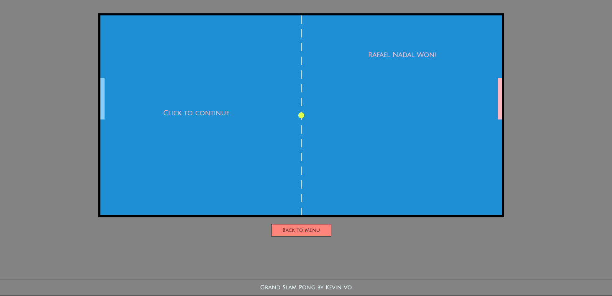
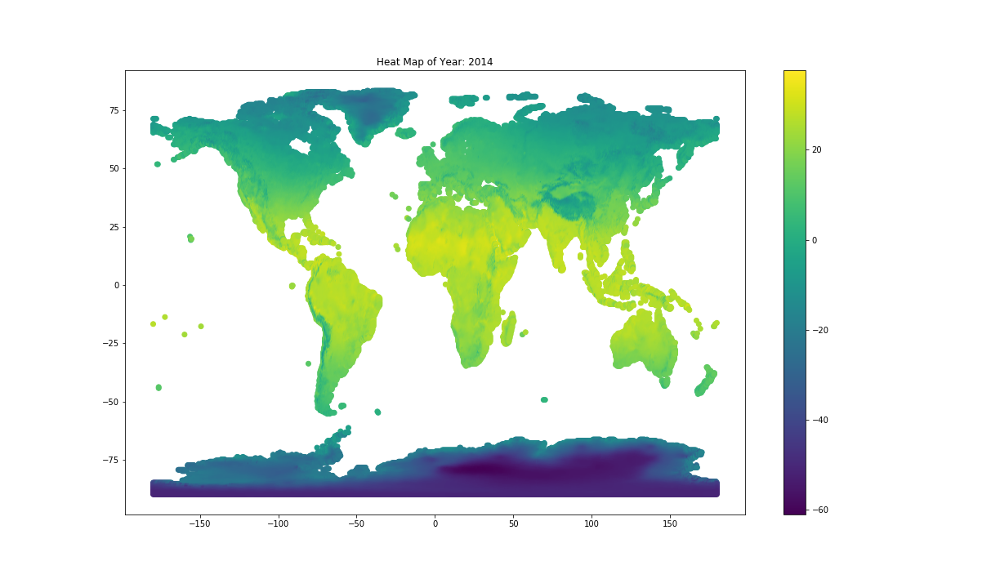

Grand Slam Pong
A JavaScript 2D pong game based on the grand slams of tennis.

Global Heat Map
I collaborated with Joseph Brice to develop visualization tools using NumPy, pandas, and Matplotlib libraries in Python for one of the biggest and most detailed data set from Community Earth System Model (CESM), a global climate model that provides state-of-the-art computer simulations of the Earth's past, present, and future climate states. The UDEL Global (land) precipitation and temperature data set (Willmott & Matsuura, University of Delaware ), consists of a series of monthly gridded temperature (T) and precipitation (P) sets. The set provides a relatively detailed global land surface temperature and precipitation climatology from year 1900 to 2014. Each of the gridded monthly values of P and T is a local point estimate at a 0.5-degree of longitude-latitude resolution.
Visualizing the Mandelbrot Set
A fun little side-project to help visualize the Mandelbrot set using the Python Imaging Library (PIL). In order to add some colors, I associated a color for each possible value of iterations. By switching from RGB colors to HSV (hue, saturation, value) colors, this allows me to change the color easily by modifying only the hue. And to smoothen the image output, I removed the bands by using a fractional escape count, also known as "normalized iteration count."The mandelbrot function must be modified to add to the result 1 - log(log2(abs(z))) where z is the last computed value of the sequence (abs(z) > 2). And lastly, to try to resolve the unequal color distrubution, I set the number of pixels for each iteration number to be counted up. For each iteration number, a color will be associated by giving a wider range of colors for iteration numbers that concerns more pixels.